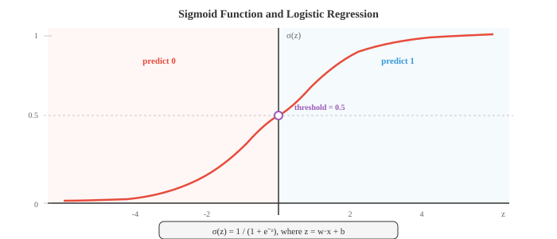

Gradient Machine Learning¶
Gradient-based learning optimises model parameters by iteratively following the slope of a loss surface. This file covers linear regression, logistic regression, softmax classification, gradient descent variants, regularisation (L1/L2), and the bias-variance tradeoff
-
The classical methods in file 01 use clever heuristics or closed-form solutions. This file covers algorithms that learn by following gradients, taking small steps downhill on a loss surface until they find good parameters. Gradient-based learning is the engine behind everything from linear regression to the largest neural networks.
-
Linear regression is the simplest gradient-based model, and it also has a closed-form solution, which makes it a perfect starting point. The model is a line (or hyperplane in higher dimensions):
-
In matrix notation (from chapter 02), if we stack all training inputs as rows of a matrix \(X\) and absorb the bias into \(w\) by appending a column of ones, this becomes \(\hat{y} = Xw\).
-
The goal is to minimise the mean squared error (MSE), the average squared difference between predictions and actual values:
- Why squared error? It has a probabilistic justification: if you assume the targets are generated as \(y = Xw + \epsilon\) where \(\epsilon \sim \mathcal{N}(0, \sigma^2)\), then maximising the Gaussian likelihood of the data (chapter 05) is equivalent to minimising MSE. Squared error also penalises large mistakes more than small ones, which is often desirable.

- Because MSE is a quadratic function of \(w\), it has a unique global minimum that we can find analytically. Taking the derivative, setting it to zero, and solving gives the normal equation:
-
This directly uses the matrix inverse from chapter 02. The expression \(X^T X\) is a \(d \times d\) matrix (where \(d\) is the number of features), and \(X^T y\) is a \(d\)-dimensional vector. The normal equation gives the exact optimal weights in one shot.
-
When does the normal equation fail? When \(X^T X\) is singular (not invertible), which happens if features are linearly dependent or if you have more features than samples (\(d > n\)). In these cases you need regularisation (covered later) or gradient descent.
-
Logistic regression adapts the linear model for binary classification. Instead of predicting a continuous value, we want a probability between 0 and 1. The sigmoid function squashes any real number into this range:
- The model computes \(z = w \cdot x + b\) (a linear score, just like linear regression) and then passes it through the sigmoid: \(\hat{y} = \sigma(w \cdot x + b)\). The output \(\hat{y}\) is interpreted as \(P(y = 1 \mid x)\).

-
The sigmoid has nice properties: \(\sigma(0) = 0.5\), \(\sigma(z) \to 1\) as \(z \to \infty\), \(\sigma(z) \to 0\) as \(z \to -\infty\), and its derivative has the elegant form \(\sigma'(z) = \sigma(z)(1 - \sigma(z))\).
-
The loss function for logistic regression is binary cross-entropy (BCE), which comes directly from the Bernoulli likelihood (chapter 05):
-
When the true label is 1, only the first term is active and it penalises low predictions. When the true label is 0, only the second term is active and it penalises high predictions. The logarithm makes the penalty extremely steep for confident wrong predictions: predicting 0.01 when the true label is 1 costs much more than predicting 0.4.
-
Unlike MSE for linear regression, there is no closed-form solution for the BCE-minimising weights. We need an iterative approach: gradient descent.
-
The intuition behind gradient descent is simple: imagine you are standing on a hilly landscape (the loss surface) in fog. You cannot see the global minimum, but you can feel the slope under your feet. You take a step downhill, feel the slope again, and repeat. Eventually you reach a valley.
- The learning rate \(\eta\) controls your step size. Too large and you overshoot valleys, bouncing around without converging. Too small and you inch along painfully slowly, possibly getting stuck in a local minimum.

-
The gradient \(\frac{\partial \mathcal{L}}{\partial w}\) is a vector pointing in the direction of steepest ascent. We subtract it because we want to go downhill. This is the chain rule from chapter 03 applied to the loss function.
-
Batch gradient descent computes the gradient using the entire training set at every step. This gives an exact gradient but is expensive when \(n\) is large.
-
Stochastic gradient descent (SGD) uses a single random example per step. The gradient is noisy (it estimates the true gradient from one sample) but each step is extremely fast. The noise can actually help escape shallow local minima.
-
Mini-batch gradient descent splits the difference: use a batch of \(B\) examples (typically 32, 64, or 256) per step. This balances computational efficiency (vectorised operations on the batch) with gradient quality. Almost all deep learning uses mini-batch SGD.
-
Backpropagation is how we actually compute gradients in models with many parameters, like neural networks. It is the chain rule from chapter 03 applied systematically through a computational graph.
-
Any model can be represented as a directed acyclic graph of operations: inputs flow in, get multiplied by weights, added together, passed through nonlinear functions, and eventually produce a loss value. The forward pass computes the output (and loss) by flowing data through this graph from input to output.
-
The backward pass (backpropagation) flows gradients in reverse. Starting from the loss, you compute how the loss changes with respect to each intermediate value, using the chain rule at every node. If \(L\) depends on \(z\) which depends on \(w\), then:
-
Each node only needs to know its own local derivative and the gradient flowing in from above. This makes backpropagation modular and efficient: the cost is roughly twice the forward pass (one pass forward, one backward).
-
Vanilla SGD has a problem: it oscillates in directions with steep curvature while making slow progress in flat directions. Optimisers improve on this by adapting the step based on gradient history.
-
SGD with momentum keeps a running average of past gradients (an exponential moving average, from chapter 04). This smooths out oscillations and accelerates progress along consistent directions:
-
Think of a ball rolling downhill: momentum lets it build up speed in a consistent direction and dampens the side-to-side jitter. The typical value is \(\beta = 0.9\).
-
Nesterov Accelerated Gradient (NAG) is a small but clever tweak: instead of computing the gradient at the current position, compute it at the "look-ahead" position \(w - \eta \beta v_{t-1}\). This corrective step reduces overshooting:
- Adagrad adapts the learning rate per parameter. Parameters that receive large gradients get smaller learning rates, and vice versa. It accumulates the squared gradients:
-
The problem: \(G_t\) only grows, so the effective learning rate monotonically decreases and eventually becomes too small to learn anything.
-
RMSprop fixes this by using an exponential moving average of squared gradients instead of a sum, so recent gradients matter more than ancient ones:
- Adam (Adaptive Moment Estimation) combines momentum and RMSprop. It maintains both a first-moment estimate (mean of gradients, like momentum) and a second-moment estimate (mean of squared gradients, like RMSprop):
- Since \(m_t\) and \(v_t\) are initialised at zero, they are biased toward zero in early steps. Bias correction fixes this:

-
Default hyperparameters (\(\beta_1 = 0.9\), \(\beta_2 = 0.999\), \(\epsilon = 10^{-8}\)) work well across a wide range of problems, which is why Adam is the default optimiser in most deep learning work.
-
AdamW decouples weight decay from the gradient update. Standard L2 regularisation and weight decay are equivalent for SGD but not for Adam. AdamW applies weight decay directly to the parameters rather than adding \(\lambda w\) to the gradient. This gives better generalisation and is now the standard in transformer training:
- LION (EvoLved Sign Momentum) is a newer optimiser discovered through program search. It uses only the sign of the momentum update (not the magnitude), which makes each update uniform in scale. LION uses less memory than Adam (no second-moment buffer) and can match or beat Adam on many tasks:
- Muon (Momentum + Orthogonalisation) applies Nesterov momentum and then orthogonalises the update matrix using Newton-Schulz iterations, which approximate the polar decomposition. The resulting update direction lies on the Stiefel manifold, every update has roughly equal magnitude across all singular directions, preventing any single direction from dominating. This removes the need for adaptive second-moment estimates (no \(v_t\) buffer like Adam), reducing memory. Muon has shown strong results on transformer training, often matching AdamW quality at faster convergence, particularly for the attention and MLP weight matrices. Embedding and output layers are typically still handled by AdamW.
- The Newton-Schulz iteration computes the orthogonal factor by repeating \(X_{k+1} = \frac{1}{2} X_k (3I - X_k^T X_k)\) for a few steps (typically 5-10). This avoids the cost of a full SVD while giving a good approximation.


-
Beyond MSE and BCE, several other loss functions are commonly used.
-
Mean Absolute Error (MAE), or L1 loss, takes the average of absolute differences: \(\frac{1}{n}\sum|y_i - \hat{y}_i|\). It is more robust to outliers than MSE because it does not square large errors.
-
Huber loss combines the best of both: it behaves like MSE for small errors (smooth, easy to optimise) and like MAE for large errors (robust to outliers). It has a threshold \(\delta\) that controls the transition.
-
Categorical cross-entropy (CCE) generalises BCE to multiple classes. If \(\hat{y}_k\) is the predicted probability for class \(k\) and the true class is \(c\):
-
This is just the negative log-probability of the correct class. Minimising cross-entropy is equivalent to maximising the likelihood, which connects back to the information theory in chapter 05: cross-entropy measures how many extra bits you need when using your predicted distribution instead of the true distribution.
-
Hinge loss is used by SVMs: \(\mathcal{L} = \max(0, 1 - y \cdot f(x))\). It only penalises predictions that are on the wrong side of the margin or within the margin. Once a point is correctly classified with sufficient confidence, the loss is zero.
-
Regularisation prevents overfitting by adding a penalty for complex models. The regularised loss is:
-
L2 regularisation (Ridge, weight decay) penalises the sum of squared weights: \(R(w) = \|w\|^2 = \sum w_i^2\). It discourages any single weight from becoming too large, effectively shrinking all weights toward zero but rarely making them exactly zero.
-
L1 regularisation (Lasso) penalises the sum of absolute weights: \(R(w) = \|w\|_1 = \sum |w_i|\). It encourages sparsity, driving many weights to exactly zero, which performs automatic feature selection.
-
Elastic Net combines both: \(R(w) = \alpha \|w\|_1 + (1 - \alpha) \|w\|^2\), blending sparsity and shrinkage.
-
There is a beautiful Bayesian interpretation (from chapter 05). L2 regularisation is equivalent to placing a Gaussian prior on the weights and finding the MAP estimate. L1 regularisation corresponds to a Laplace prior. The regularisation strength \(\lambda\) controls how much you trust the prior relative to the data.
-
Evaluation metrics tell you whether your model is actually working. For regression, MSE and MAE are standard. For classification, things are more nuanced.
-
A confusion matrix is a table of four counts for binary classification:
- True Positive (TP): predicted positive, actually positive
- False Positive (FP): predicted positive, actually negative
- True Negative (TN): predicted negative, actually negative
-
False Negative (FN): predicted negative, actually positive
-
Accuracy = \(\frac{TP + TN}{TP + TN + FP + FN}\) can be misleading when classes are imbalanced. If 99% of emails are not spam, a model that always predicts "not spam" has 99% accuracy but is useless.
-
Precision = \(\frac{TP}{TP + FP}\) answers: of all predicted positives, how many are actually positive? High precision means few false alarms.
-
Recall (sensitivity) = \(\frac{TP}{TP + FN}\) answers: of all actual positives, how many did you catch? High recall means few missed cases.
-
F1 score = \(\frac{2 \cdot \text{precision} \cdot \text{recall}}{\text{precision} + \text{recall}}\) is the harmonic mean of precision and recall, balancing both.
-
The ROC curve plots the true positive rate (recall) against the false positive rate (\(\frac{FP}{FP + TN}\)) as you vary the classification threshold from 0 to 1. A perfect classifier hugs the top-left corner. The AUC (area under the ROC curve) summarises performance in a single number: 1.0 is perfect, 0.5 is random guessing.
-
Cross-validation provides a more reliable estimate of generalisation performance. In \(k\)-fold cross-validation, you split the data into \(k\) folds, train on \(k-1\) of them, test on the remaining fold, and rotate. The average test performance across all \(k\) folds is your estimate. This uses all data for both training and testing (just never at the same time), which is especially valuable when data is scarce.
-
The bias-variance tradeoff (from chapter 04) is the fundamental tension in ML. A model's expected error decomposes into:
-
Bias is systematic error from wrong assumptions (e.g., fitting a line to curved data). Variance is sensitivity to training data fluctuations (e.g., a degree-20 polynomial fitting noise). Simple models have high bias and low variance; complex models have low bias and high variance. The sweet spot minimises total error.
-
Learning rate scheduling adjusts \(\eta\) during training. Common strategies:
- Step decay: multiply \(\eta\) by a factor (e.g., 0.1) every \(N\) epochs
- Cosine annealing: smoothly decrease \(\eta\) following a cosine curve from the initial value to near zero
- Warmup: start with a very small \(\eta\) and linearly increase it for the first few thousand steps, then decay. This prevents large initial gradients from destabilising training
-
1cycle: one cosine cycle up then down, which can give faster convergence
-
Hyperparameter tuning is the process of finding good values for learning rate, batch size, regularisation strength, and other settings that are not learned by gradient descent. Common approaches:
- Grid search: try every combination on a predefined grid (exhaustive but expensive)
- Random search: sample combinations randomly, which is often more efficient because not all hyperparameters matter equally
- Bayesian optimisation: build a model of the objective function and intelligently choose the next hyperparameters to try
-
ASHA (Asynchronous Successive Halving Algorithm): runs many trials in parallel with small budgets, then promotes the most promising ones to larger budgets while killing the rest early. It combines the efficiency of early stopping with massive parallelism — instead of running 100 full training runs, start all 100 cheaply, keep the top quarter at each rung, and only a handful run to completion. This is the backbone of modern large-scale tuning frameworks like Ray Tune.
-
Schedule-free learning eliminates the need for a learning rate schedule altogether. Instead of decaying \(\eta\) on a fixed curve, it maintains two sequences: a slow-moving average of iterates \(z_t\) (which converges to the optimum) and a fast exploratory iterate \(y_t\) (where gradients are evaluated). The final output is the averaged sequence, which provably matches the convergence rate of the best schedule in hindsight. This removes the schedule as a hyperparameter entirely — you only set the base learning rate and the optimizer handles the rest. Schedule-free variants of both SGD and Adam have been shown to match or exceed their tuned-schedule counterparts.
Coding Tasks (use CoLab or notebook)¶
-
Implement linear regression with both the normal equation and gradient descent. Compare the solutions and plot the convergence of the GD loss over iterations.
import jax import jax.numpy as jnp import matplotlib.pyplot as plt # Generate synthetic data: y = 3x + 2 + noise key = jax.random.PRNGKey(42) n = 100 X = jax.random.uniform(key, (n, 1), minval=0, maxval=10) y = 3 * X[:, 0] + 2 + jax.random.normal(key, (n,)) * 1.5 # Add bias column X_b = jnp.column_stack([X, jnp.ones(n)]) # Normal equation w_exact = jnp.linalg.solve(X_b.T @ X_b, X_b.T @ y) print(f"Normal equation: w={w_exact[0]:.4f}, b={w_exact[1]:.4f}") # Gradient descent w_gd = jnp.zeros(2) lr = 0.005 losses = [] for step in range(500): pred = X_b @ w_gd error = pred - y loss = jnp.mean(error ** 2) losses.append(float(loss)) grad = (2 / n) * X_b.T @ error w_gd = w_gd - lr * grad print(f"Gradient descent: w={w_gd[0]:.4f}, b={w_gd[1]:.4f}") fig, axes = plt.subplots(1, 2, figsize=(12, 4)) axes[0].scatter(X[:, 0], y, s=15, alpha=0.5, color='#3498db') axes[0].plot([0, 10], [w_exact[1], w_exact[0]*10 + w_exact[1]], color='#e74c3c', linewidth=2) axes[0].set_title("Linear Regression Fit") axes[0].set_xlabel("x"); axes[0].set_ylabel("y") axes[1].plot(losses, color='#27ae60', linewidth=1.5) axes[1].set_title("GD Loss Convergence") axes[1].set_xlabel("Step"); axes[1].set_ylabel("MSE") axes[1].set_yscale('log') plt.tight_layout() plt.show() -
Implement logistic regression from scratch with gradient descent. Train on a 2D dataset and visualise the learned decision boundary.
import jax import jax.numpy as jnp import matplotlib.pyplot as plt from sklearn.datasets import make_moons # Generate data X, y = make_moons(n_samples=300, noise=0.2, random_state=42) X, y = jnp.array(X), jnp.array(y, dtype=jnp.float32) def sigmoid(z): return 1 / (1 + jnp.exp(-z)) # Add bias column X_b = jnp.column_stack([X, jnp.ones(len(X))]) w = jnp.zeros(3) lr = 0.5 losses = [] for step in range(2000): z = X_b @ w pred = sigmoid(z) # BCE loss loss = -jnp.mean(y * jnp.log(pred + 1e-8) + (1 - y) * jnp.log(1 - pred + 1e-8)) losses.append(float(loss)) # Gradient grad = X_b.T @ (pred - y) / len(y) w = w - lr * grad # Decision boundary xx, yy = jnp.meshgrid(jnp.linspace(-2, 3, 200), jnp.linspace(-1.5, 2, 200)) grid = jnp.column_stack([xx.ravel(), yy.ravel(), jnp.ones(xx.size)]) zz = sigmoid(grid @ w).reshape(xx.shape) plt.figure(figsize=(8, 6)) plt.contourf(xx, yy, zz, levels=[0, 0.5, 1], alpha=0.3, colors=['#e74c3c', '#3498db']) plt.contour(xx, yy, zz, levels=[0.5], colors='#9b59b6', linewidths=2) plt.scatter(X[y==0, 0], X[y==0, 1], c='#e74c3c', s=15, label='Class 0') plt.scatter(X[y==1, 0], X[y==1, 1], c='#3498db', s=15, label='Class 1') plt.title("Logistic Regression Decision Boundary") plt.legend() plt.grid(alpha=0.3) plt.show() -
Compare optimiser trajectories on a 2D quadratic surface. Run SGD, SGD+Momentum, and Adam from the same starting point and plot their paths.
import jax import jax.numpy as jnp import matplotlib.pyplot as plt # Elongated quadratic: L(w1, w2) = 0.5*w1^2 + 10*w2^2 def loss_fn(w): return 0.5 * w[0]**2 + 10 * w[1]**2 grad_fn = jax.grad(loss_fn) def run_sgd(w0, lr=0.05, steps=80): w = w0.copy() path = [w.copy()] for _ in range(steps): g = grad_fn(w) w = w - lr * g path.append(w.copy()) return jnp.stack(path) def run_momentum(w0, lr=0.05, beta=0.9, steps=80): w, v = w0.copy(), jnp.zeros(2) path = [w.copy()] for _ in range(steps): g = grad_fn(w) v = beta * v + (1 - beta) * g w = w - lr * v path.append(w.copy()) return jnp.stack(path) def run_adam(w0, lr=0.05, b1=0.9, b2=0.999, eps=1e-8, steps=80): w, m, v = w0.copy(), jnp.zeros(2), jnp.zeros(2) path = [w.copy()] for t in range(1, steps + 1): g = grad_fn(w) m = b1 * m + (1 - b1) * g v = b2 * v + (1 - b2) * g**2 m_hat = m / (1 - b1**t) v_hat = v / (1 - b2**t) w = w - lr * m_hat / (jnp.sqrt(v_hat) + eps) path.append(w.copy()) return jnp.stack(path) w0 = jnp.array([8.0, 3.0]) sgd_path = run_sgd(w0) mom_path = run_momentum(w0) adam_path = run_adam(w0) # Plot fig, ax = plt.subplots(figsize=(8, 6)) w1 = jnp.linspace(-10, 10, 100) w2 = jnp.linspace(-4, 4, 100) W1, W2 = jnp.meshgrid(w1, w2) L = 0.5 * W1**2 + 10 * W2**2 ax.contour(W1, W2, L, levels=20, cmap='Greys', alpha=0.4) ax.plot(sgd_path[:,0], sgd_path[:,1], 'o-', color='#3498db', markersize=2, linewidth=1, label='SGD') ax.plot(mom_path[:,0], mom_path[:,1], 'o-', color='#27ae60', markersize=2, linewidth=1, label='Momentum') ax.plot(adam_path[:,0], adam_path[:,1], 'o-', color='#e74c3c', markersize=2, linewidth=1, label='Adam') ax.plot(0, 0, 'k*', markersize=15, label='Minimum') ax.set_xlabel('w₁'); ax.set_ylabel('w₂') ax.set_title("Optimizer Trajectories on Elongated Quadratic") ax.legend() plt.grid(alpha=0.3) plt.show() -
Show the effect of L1 vs L2 regularisation on weight sparsity. Train linear regression with both penalties and compare the resulting weight vectors.
import jax import jax.numpy as jnp import matplotlib.pyplot as plt # Synthetic data: only first 3 of 20 features are relevant key = jax.random.PRNGKey(0) n, d = 200, 20 w_true = jnp.zeros(d).at[:3].set(jnp.array([3.0, -2.0, 1.5])) X = jax.random.normal(key, (n, d)) y = X @ w_true + 0.5 * jax.random.normal(key, (n,)) def train_ridge(X, y, lam=1.0, lr=0.01, steps=2000): """L2 regularised linear regression via GD.""" w = jnp.zeros(X.shape[1]) for _ in range(steps): pred = X @ w grad = (2/len(y)) * X.T @ (pred - y) + 2 * lam * w w = w - lr * grad return w def train_lasso(X, y, lam=1.0, lr=0.01, steps=2000): """L1 regularised linear regression via proximal GD.""" w = jnp.zeros(X.shape[1]) for _ in range(steps): pred = X @ w grad = (2/len(y)) * X.T @ (pred - y) w = w - lr * grad # Soft thresholding (proximal operator for L1) w = jnp.sign(w) * jnp.maximum(jnp.abs(w) - lr * lam, 0) return w w_l2 = train_ridge(X, y, lam=0.1) w_l1 = train_lasso(X, y, lam=0.1) fig, axes = plt.subplots(1, 3, figsize=(14, 4)) axes[0].bar(range(d), w_true, color='#333', alpha=0.7) axes[0].set_title("True Weights"); axes[0].set_xlabel("Feature") axes[1].bar(range(d), w_l2, color='#3498db', alpha=0.7) axes[1].set_title("L2 (Ridge): shrinks all"); axes[1].set_xlabel("Feature") axes[2].bar(range(d), w_l1, color='#e74c3c', alpha=0.7) axes[2].set_title("L1 (Lasso): zeros out irrelevant"); axes[2].set_xlabel("Feature") plt.tight_layout() plt.show() print(f"L2 non-zero weights: {int(jnp.sum(jnp.abs(w_l2) > 0.01))}/{d}") print(f"L1 non-zero weights: {int(jnp.sum(jnp.abs(w_l1) > 0.01))}/{d}")